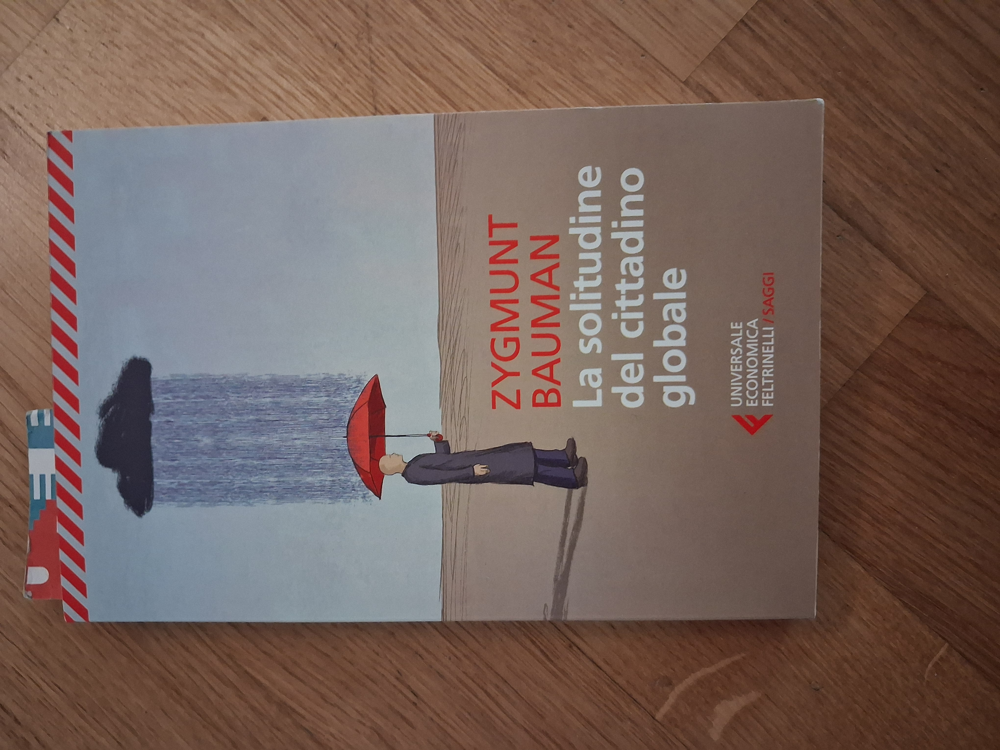

Lost your job? Tough luck.
A reflection on Bauman and the insecurity of work

“Individual freedom can only be the product of a collective effort (…)”
(from Zygmunt Bauman, In Search of Politics)
According to Bauman, individual freedom can truly be freedom only when social conditions exist that make it possible: in this sense, individual freedom is the product of a collective effort.
In contemporary society, however, the conditions that make freedom possible are increasingly regarded as an individual responsibility: problems and fears that could once be recognised as shared concerns are privatised, and everyone finds themselves having to deal with them on their own. The system produces a collective condition, but the solution is sought individually.
I am reading this book (from 1999) and find myself reflecting on how clearly we can still see the phenomena described by Bauman all around us, for example in the world of work and in the way insecurity is managed (or exploited). There are many reflections one could make on the perception of security, bringing politics, propaganda and immigration into the discussion. But today I would like to focus on work, and in particular on what I see happening here and now.
Work is one of the places where individualisation becomes painfully concrete. Not only because everyone is expected to “manage” their own career, but also because job insecurity itself tends to be presented as something that individuals must learn to deal with by adapting, retraining, becoming more flexible, more competitive, more resilient.
If you cannot find a job, you need to make yourself more competitive and learn how to sell yourself better.
If you are afraid, you need to learn how to manage your fear.
If your social position has become precarious, you need to adapt and reinvent yourself.
If you are looking for stability and peace of mind and cannot find them, it is your fault because you have a poor entrepreneurial mindset and you are one of those people who want to live comfortably with a secure, permanent job.
Now, I actually like an innovative and entrepreneurial mindset very much, but I have absolutely nothing against a secure job either. I think the two can perfectly well coexist. It seems perfectly normal to me that in any society the proportion of “innovators” should be a minority; but I would never belittle the contribution of those who do a secure job, even if it is repetitive, if you like, or even “easy”.
Society needs both types of people: if we were all entrepreneurs, entrepreneurs would have nobody to do the work in their companies, and if we were all “followers” who avoided risk, we would have no innovation.
That, in fact, is precisely the problem: we do not think as a society; we think in terms of extreme individualisation.
This is why, when reading Bauman, I immediately thought that work is one of the places where this individualisation becomes extremely concrete, and extremely dramatic.
Recently, I have had several examples of how this individualisation is affecting the lives of many people. A friend told me about his daughter, a graphic designer, who lost her job and obtained a nursing diploma, then started looking for work in that field. Another friend told me a similar story about his son, a musician, who is now about to obtain a diploma in some kind of financial field.
An acquaintance told me about her husband, an engineer, who was made redundant because of “corporate restructuring” and now does odd repair jobs to make ends meet. A close friend, who has a technical diploma, reinvented himself as a salesperson last year.
I do not want to discuss here whether this is the fault of AI, Trumpian policies, wars over oil, greenwashing or UFOs. The point is that we are living through a period of great instability in the world of work, and people are being left alone to manage this instability.
For many people, work is part of their identity and responds to deep human needs; and a society that leaves individuals to deal with these dramatic changes on their own is a society that is failing to take responsibility for its own survival.
Because when someone loses their job, they do not lose only a salary: they may lose a professional identity, a network of relationships, a position in society, a sense of usefulness, a sense of direction. And when many people lose these things, it is society as a whole that has a problem, not the individual.
So there are two distinct concepts here: the real insecurity of the world of work and the transformation of insecurity into an individual responsibility.
The first is a social and economic fact; the second is the mechanism described by Bauman 27 years ago, and unfortunately it has aged remarkably well.
For example: if a company closes and a hundred people lose their jobs, that is a collective problem. But if we tell each of those hundred people, “Now you have to reinvent yourself, update your skills, acquire new competencies, be resilient, learn how to sell yourself, change sectors...”, we are turning one collective consequence into a hundred individual problems.
And here we come back exactly to Bauman: if the agora is missing, where can an individual difficulty be transformed into a collective issue?
Today, when someone loses their job, cannot find a job or is working for too little pay, they are bombarded with an embarrassing amount of advice from the guru of the moment: “I'll show you how to write a better CV”, “I'll explain how to sell yourself better”, “I'll tell you how to answer interview questions”, or perhaps they are sold yet another training course so they can collect the six-thousandth little certificate in whatever niche is supposed to be the next big thing for the next two months.
But shouldn't we instead start reflecting again on the system we have built as a society? Couldn't we start saying that we need to recover the collective dimension of the problem of work?
Perhaps we should stop, at least for a moment, asking ourselves how to make each individual better at surviving insecurity, and start asking ourselves again what we can do, as a society, so that insecurity does not always and exclusively fall on the shoulders of the individual.
What do you think?